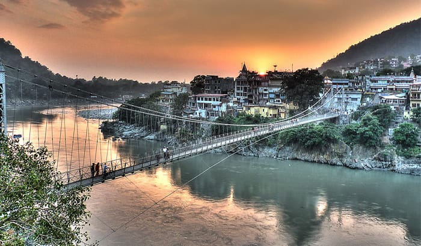

About Rishikesh
Rishikesh, also spelt as Hrishikesh, is a city governed by Rishikesh Municipal Corporation (since October 2017) and a tehsil in Dehradun district of the Indian state Uttarakhand. Located in the foothills of the Himalayas in northern India, it is known as the "Gateway to the Garhwal Himalayas" and "Yoga Capital of the World".It lies 21 km (13 mi) north of the city Haridwar and 45 km (28 mi) southeast of the state capital Dehradun. As of 2021, Rishikesh tehsil has a total population of 322,825; this figure includes 93 surrounding villages as well as the city.It is the seventh most populated city in the state of Uttarakhand. It is known as the pilgrimage town and regarded as one of the holiest places for Hindus.Hindu sages and saints have visited Rishikesh since ancient times to meditate in search of higher knowledge.The historical records mention that some pilgrims used to stay at Rishikesh as a resting place before moving onwards to the higher mountains for the pilgrimage while a larger number used to visit Rishikesh as the original destination and visited various sites between Rishikesh and Lakshman Jhula before returning. However, Rishikesh has in recent decades shifted from a pilgrim to a tourist town. The International Yoga Festival introduced in 2000 has brought a new influx of tourists. Local markets have evolved from commercialising goods such as "local and religious handicrafts" to a more service-oriented tourist industry with "provision stores, cafes, hotels and yoga and meditation" as well as rafting.The total cost for 2 nights and 3 days tour per person could be between 1100-7000.